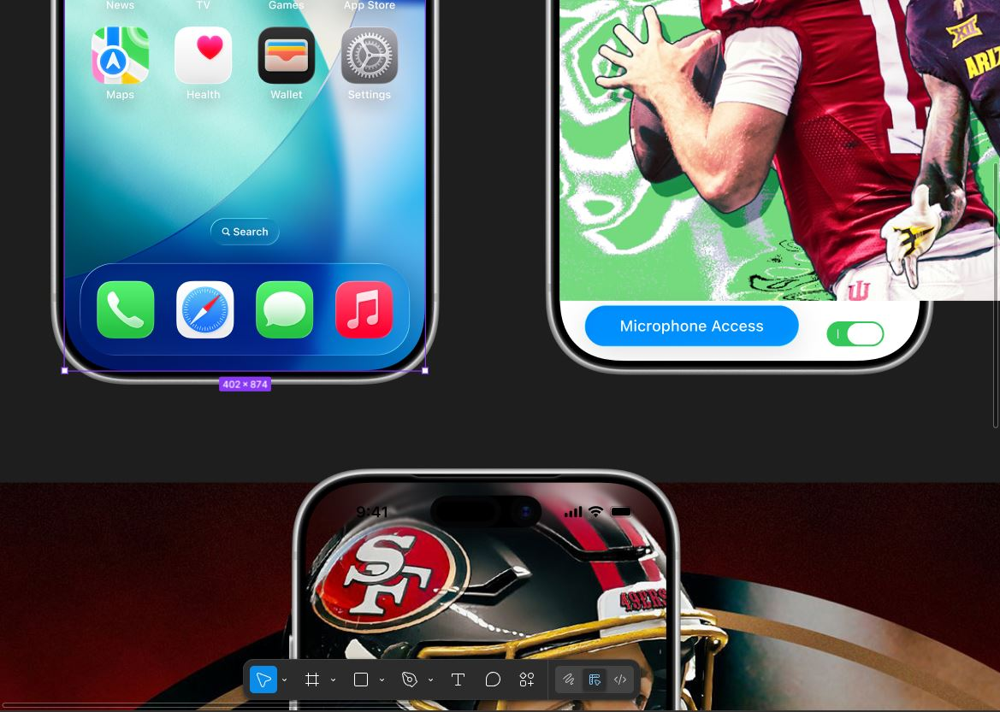

Kid's gravitate to sports. Many of us reflect on the formative years and landmark our past with the memorable moments we shared. However, some kids do not possess the instinctual desire for reading articles and speaking those words outloud. As elder mentoring sports fans teach their children to read and speak at an elementary level, we want them to join the conversation we share as seasoned fans. In this way, bridging the uncanny valley between spanning the kid's disjointed sentences tonality, reading words by the syllables, and failing to enjoy the process can be daunting; ask any school teacher.

For this issue, I wanted to create an app without distractions, only sports and only reading. Everytime someone reads the article outloud, they get to see the highlights. We should incentivize the kids to see what they want to see. To activate their imaginations before seeing the spectacular. In this way, I hope they start to see the sport as we do.